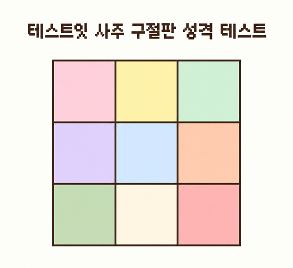

테스트잇
성격
얼굴
그외
사주
테스트잇 사주 구절판 성격 테스트

테스트 시작하기
정보 입력
이름 또는 닉네임
양력 생년월일
생년
1995년
▾
월
일
양력 기준으로 입력해 주세요.
결과 확인하기
결과 준비 중...
테스트잇 사주 구절판 성격 테스트
TEST-IT.CO.KR / TEST419
결과 이미지 저장하기
다시 해보기
다른 테스트 하기
테스트 공유하기
이미지를 길게 눌러 저장해 주세요.
닫기